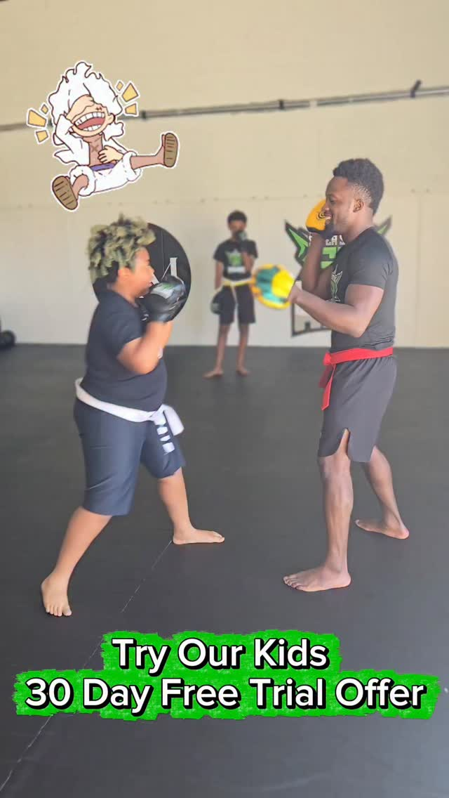
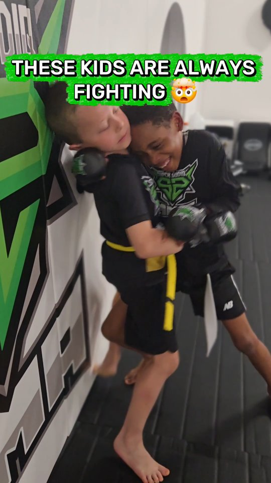
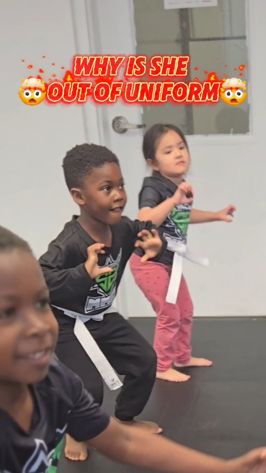
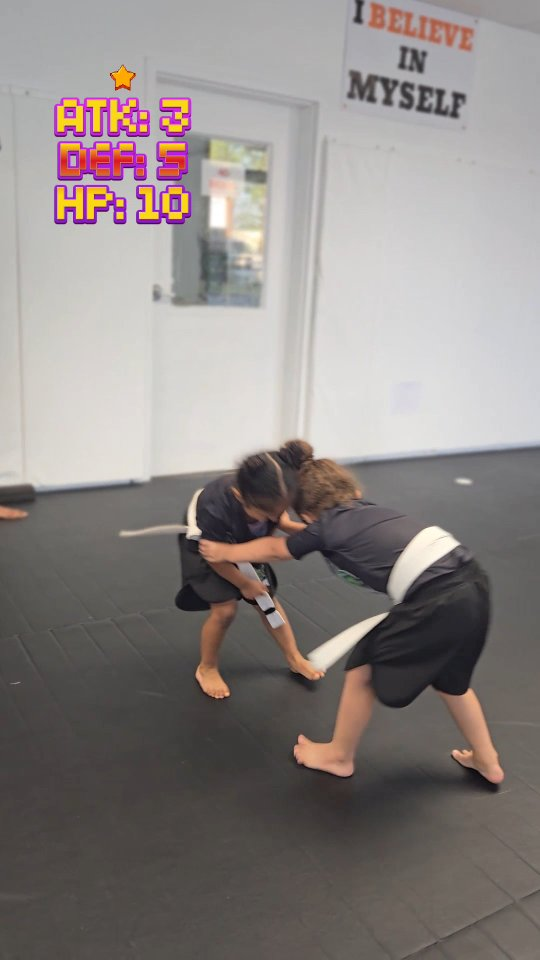
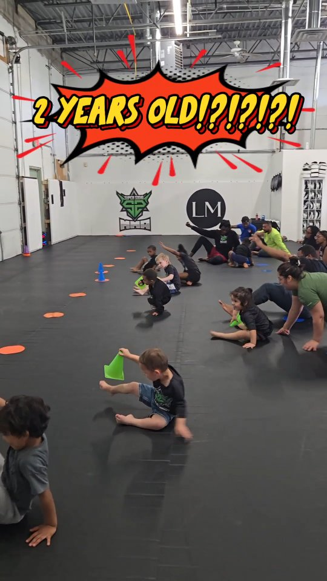

You Can.
Your Child's First 30 Days Are Completely Free.
No Credit Card. No Experience Required. No Obligation.
A Personal Message to Every Parent in Southern Maryland
Real confidence. Real self-defense. Real discipline. Taught through the Super Sodiq Training System — UFC-level techniques disguised as games children cannot get enough of.




If you have a child between 2 and 17, the next few minutes could change how you think about every after-school activity you will ever enroll them in again.
Most martial arts schools teach technique and hope it sticks. A child watches a technique. They try to copy it. They do it wrong. They are corrected. They try again. They forget by next week. And the cycle repeats for months before anything actually sticks.
Sodiq "Super" Yusuff knew there was a better way. As a UFC fighter who has spent his entire career drilling techniques under Master Lloyd Irvin — UFC Hall of Fame coach — Sodiq understood how real learning happens.
The question was how to make that level of drilling happen with children.
The answer was to disguise the drilling inside games. Not games invented to keep kids busy. Games specifically engineered so that every single movement inside the game is a real technique. A real position. A real skill that Sodiq has used inside the UFC Octagon.
The child is not doing a drill. They are playing. But their body is learning something real at a speed that traditional instruction cannot touch.
This is The Super Sodiq Training System. And it is unlike anything else available to children in Southern Maryland.

Parent & Me · Ages 2–4The instructor calls out a position. Every child has to get into that position as fast as they can. What looks like a simple listening game is drilling the foundational positions of Brazilian Jiu-Jitsu ground movement — the exact positions that determine whether a person gets up safely or stays stuck on the ground in a real situation.
The instructor calls out positions in rapid sequence. Bear. Ninja. Turtle. Cat. Faster. Faster. Underneath the laughter, every child is drilling the most important skill in ground fighting — the ability to react to a changing situation immediately without consciously deciding what to do.
The child is on their back, feet up, hands ready. The instructor tries to get past their feet and hands — to get inside the castle. This is Brazilian Jiu-Jitsu guard defense. The exact same skill Sodiq uses to maintain position in his UFC fights.
The instructor gets on all fours and starts crawling away. The children have to chase, jump on the back, and wrap their arms around the instructor's neck — exactly like a guillotine choke. The same submission Sodiq used to finish Don Shainis in 30 seconds in the UFC.
The children have to snap the instructor's head and arm down — turning the cow into a turtle — using leverage and technique rather than strength. This is the head and arm snap-down — a fundamental wrestling and MMA control technique Sodiq has used his entire career.
The coach shoots in low. The child sprawls — pushing their hips down. The child spins around and ends up on the coach's back like a backpack. This is the sprawl-and-spin to back take — one of the most important sequences in Mixed Martial Arts.
The instructor yells: BIG BELLY. The child pushes their hips forward and down — belly out, hips in — to clear the leg and complete the sprawl. Children learn it in one session because it has a name, a physical cue, and an immediate result they can feel.
The opponent has double unders. The instructor yells: HELLO. The child throws both hands up like they are waving hello — which breaks the grip, creates space, and allows them to turn and face the opponent. Back defense locked into a word the child will never forget.
The child has a single leg. The coach reads what the opponent is doing to resist and calls out the counter. If the opponent is pulling back — BOW. If the opponent is driving — LIFT. Drilling one of the most important takedowns in wrestling and MMA at a repetition volume that would take months through traditional drilling.
Most children's martial arts programs teach technique and hope it sticks. The Super Sodiq Training System engineers the drilling into the game itself — so the child is getting hundreds of repetitions of real technique without ever feeling like they are practicing. Without ever losing focus. Without ever wanting to stop.
The results show up faster than any traditional program can produce. Parents see the physical skills develop in weeks rather than months. The children retain what they learn because it was drilled into their bodies through play rather than memorized through repetition.
Every game has a purpose. Every purpose produces a real skill. And every real skill was used by Sodiq "Super" Yusuff in the UFC Octagon.
That is what your child is learning. And they think they are just playing.
If someone grabs them — they will know how to break free. If someone pushes them — they will know how to create distance. Knowing this changes everything about how a child carries themselves. Capability is the best prevention.
Participation trophies build nothing lasting. Real self-esteem — the kind that holds under pressure — is built by doing hard things and succeeding. Every class your child attends they do something they could not do when they walked in.
This is the benefit parents mention most consistently after three to six months. The grades went up. The arguing at home went down. They started finishing things they started. They stopped quitting when things got hard.
The ability to face something hard, fail at it, and try again without quitting — that is what separates people who reach their potential from people who spend their lives avoiding situations where they might not succeed.
Children who train together bond in a way that recreational leagues and after-school activities rarely produce. Your child will belong to something here.
Every game demands complete presence. You cannot play Protect the Castle while thinking about something else. Parents whose children struggle with focus consistently report significant improvement within the first few months.
This program was built for that child. The Super Sodiq Training System works specifically through games — which means the shy child engages through play before they ever have to engage through performance. Some of our most dramatic transformations have come from the quietest children who walked through this door. Your child does not need to be confident to start. Confidence is what they leave with.
The research says the opposite and we see it firsthand every day. Children in structured martial arts programs consistently show reduced aggression — not increased. The child who knows what they can do does not need to prove it to anyone.
Before you use that as evidence that this will not work — ask what the environment was like. Most children who quit a previous program quit the instructor or the culture — not the martial arts itself. This system was designed to solve exactly that problem. The first 30 days are free specifically so you can see the difference without risking a thing.
Two to three sessions per week is enough to see the results parents describe. And most families find that what their child builds on this mat — the focus, the discipline, the resilience — improves every other activity they are already doing. It does not compete with other activities. It elevates them.
Athletic ability is not a requirement here. It is a result. We build coordination, strength, and physical confidence in children who had none of it when they walked in. The only thing your child needs to start is a willingness to show up.
The social feedback from school that is not always accurate or kind. The screen that is always available and always easier than doing something hard.
The parents who tell us they wish they had started sooner are not talking about the martial arts skills. They are talking about what they watched happen to their child in the months before they finally walked through this door. The change is visible. And it happens faster than most parents expect.
Your child's first 30 days are completely free. There is no financial barrier. There is no risk. The only question is how much longer you want to wait.
"Sodiq is a great instructor and has a passion for teaching. This place is more than just a gym — it's a community where everyone is encouraged to reach their full potential."
"The gym has a welcoming and motivating atmosphere for beginners and experienced fighters alike. Coach Sodiq is extremely knowledgeable, patient, and genuinely invested in helping each person improve."
You are dropping them off at school on a Tuesday morning. You watch them walk toward the entrance and something stops you before you pull away. Something is different. Not dramatic. The shoulders are back in a way they were not six months ago. The pace is steady instead of hesitant.
You think back to the parent-teacher conference three weeks ago. Their teacher said something that stayed with you. That something had changed this semester. That they were participating more.
You think about the morning six months ago when you almost did not fill out that form. When you told yourself you would come back to it later. And you are so glad you did not wait.
Your child's first 30 days are completely free. No credit card. No pressure. No risk of any kind. The only thing left is the decision.
Give your child the chance to find out what they are made of. Six months from now you will look back on this moment and be so glad you did it when you did.
To every parent who wants more for their child,
Sodiq "Super" Yusuff
UFC Fighter · Academy Owner & Program Director
P.S. — If you scrolled to the bottom — here is everything in two sentences. A UFC fighter who spent eight years designing a training system that teaches children the exact techniques he has used in the Octagon — through games so engaging that children beg to come back — has opened the only UFC fighter-owned Mixed Martial Arts academy in Southern Maryland, and your child's first 30 days are completely free with no credit card required. Fill out the form above right now.
P.P.S. — The shy child. The bullied child. The child who tried another program and quit because it was boring. The one with too much energy and no direction for it. The teenager who walked in skeptical and came back on their own the next day. The toddler who could not follow a single instruction and became the one leading the warm-up eight months later. We have seen every version. Every single one of them changed. The first 30 days cost you nothing. The only question is whether you are going to give your child the chance to find out what they are made of.